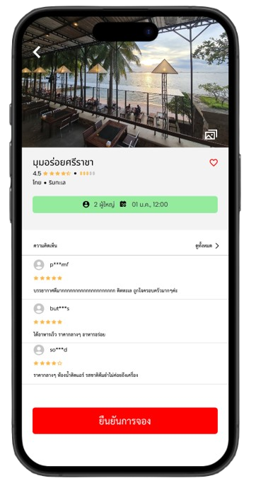
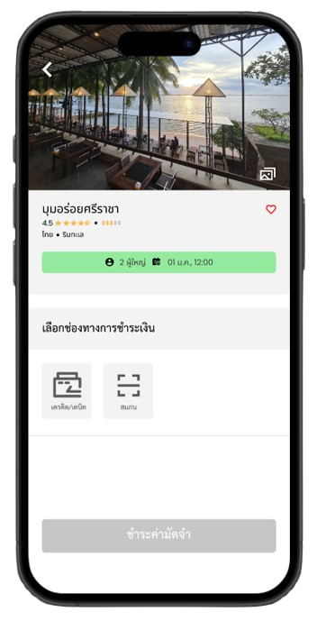
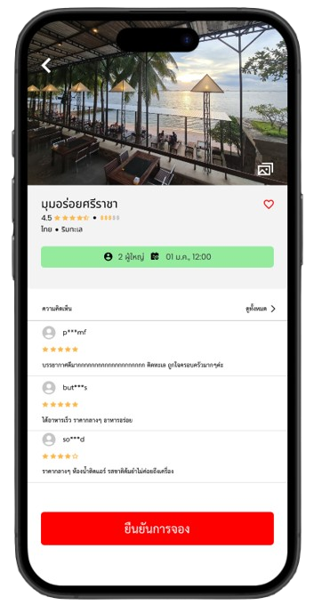
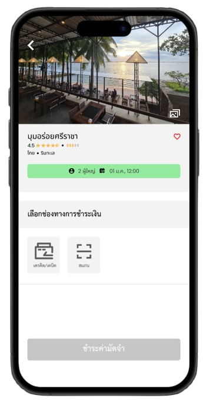

Case Studies
Table Now - Restaurant booking Mobile App
2024 | UX/UI Design
View Prototype on FigmaOverview
Table Now is an application designed to help users discover restaurants and book tables in advance with an easy and secure deposit system. It is ideal for modern users who value convenience in managing their dining plans.
Goals
• Discover restaurants in desired locations with detailed information such as photos, menus, prices, and reviews to aid in decision-making.
• Simplify table reservations with a secure deposit system and provide refunds upon dining at the restaurant.
Problem Statement
• Users cannot view detailed menus or prices on the app, making it difficult to decide what to order at the restaurant. This lack of information can lead to uncertainty and inconvenience when trying to make a reservation.
• The app only provides images of the restaurant, which may not fully convey the ambiance or service experience. Users want additional information, such as reviews or unique features of the restaurant, to help them make a more informed decision.
User Persona

Name: Kanokwan Riamsri
Age: 20
Occupation: Student at Faculty of Science, Computer Science, Kasetsart University Sriracha Campus
Location: Thung Sukla, Si Racha, Chonburi
Goals
• Find a restaurant suitable for dining with family.
• Look for a place that is affordable and has a good atmosphere.
• Choose a restaurant close to the dormitory.
Challenges
• Finding a restaurant that meets criteria for price, ambiance, and proximity.
• Choosing a restaurant that appeals to everyone in the family and fits within the budget.
Technology Proficiency
• Proficient in using smartphones and various applications.
Motivations
• Desires convenience in selecting and booking nearby restaurants with good ambiance.
• Prefers an app providing complete information about restaurants, such as menus, prices, and reviews.
Behavior
• Uses apps to search for suitable restaurants for family dining.
• Pays attention to restaurant reviews and details like menus and prices to aid in decision-making.
User Flow
The system guides the user from selecting a movie and showtime to reserving seats and completing payment.
Key Features
• Restaurant search system based on the user’s location
• Display food categories for quick restaurant searches
• Advanced table reservation with options to select time, date, and month
• Transparent deposit system
• Reservation summary display
• Show reviews before making a reservation decision
Typography
TH SarabunPSK: was chosen for its clarity and readability in Thai, offering a formal and easy-to-digest experience for users.
Poppins: was selected for its modern design and clean appearance, making it ideal for mobile screens and enhancing the overall user experience on mobile devices.
Color Palette
• #FFFFFF (White)
• #F3F3F3 (Very Light Gray)
• #DDDDDD (Light Gray)
• #898989 (Medium Gray)
• #5B5B5B (Dark Gray)
• #000000 (Black)
• #94EB9E (Light Green)
• #EE2020 (Red)
Highlight Screens


 


